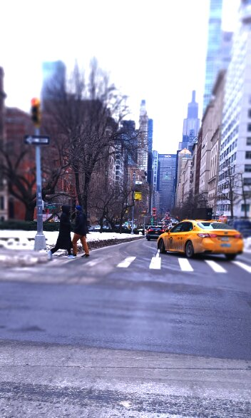

I was a cold winters day in the city; you were on your way to class and -thanks to the trains- were running later than you had liked. Suddenly, the ground started shaking as you were crossing the street! It was a slow rumble at first only to increase in intensity in a manner of minutes. All around you people start to run and so do you, the ground beneath your feet jolts violently and you're roughly flung forward as the world around you fades to black, the last thing that comes to you, is a strange, sweet smell.